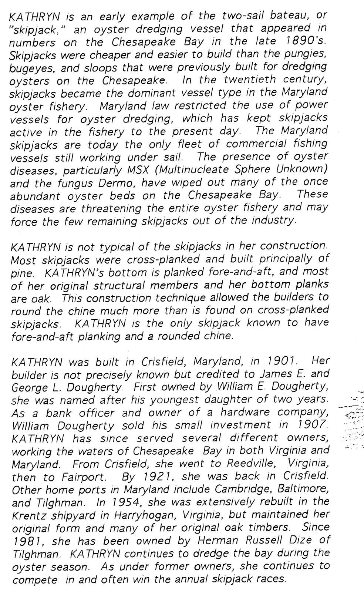

Original scan pixels: [1058, 3311, 4484, 8880]; source SHA-256: 2331daad060a890dcaf424a5c3148d069958564fa24096fce737f284e43e9b7f.
Native lossless view · Raw OCR · Word coordinates/confidence · Manifest

KATHRYN is an early example of the two-sail bateau, or “skipjack,” an oyster dredging vessel that appeared in numbers on the Chesapeake Bay in the late 1890's. Skipjacks were cheaper and easier to build than the pungies, bugeyes, and sloops that were previously built for dredging oysters on the Chesapeake. In the twentieth century, skipjacks became the dominant vessel type in the Maryland oyster fishery. Maryland law restricted the use of power vessels for oyster dredging, which has kept skipjacks active in the fishery to the present day. The Maryland skipjacks are today the only fleet of commercial fishing vessels still working under sail. The presence of oyster diseases, particularly MSX (Multinucleate Sphere Unknown) and the fungus Dermo, have wiped out many of the once abundant oyster beds on the Chesapeake Bay. These diseases are threatening the entire oyster fishery and may force the few remaining skipjacks out of the industry. KATHRYN is not typical of the skipjacks in her construction. Most skipjacks were cross-planked and built principally of pine. KATHRYN’s bottom is planked fore-and-aft, and most of her original structural members and her bottom planks are oak. This construction technique allowed the builders to round the chine much more than is found on cross-planked skipjacks. KATHRYN is the only skipjack known to have fore-and-aft planking and a rounded chine. KATHRYN was built in Crisfield, Maryland, in 1901. Her builder is not precisely known but credited to James E. and George L. Dougherty. First owned by William E. Dougherty, 7 she was named after his youngest daughter of two years. se As a bank officer and owner of a hardware company, ~ a= William Dougherty sold his small investment in 1907. ~° KATHRYN has since served several different owners, :°?2" working the waters of Chesapeake Bay in both Virginia and ~~" Maryland. From Crisfield, she went to Reedville, Virginia, then to Fairport. By 1921, she was back in Crisfield. Other home ports in Maryland include Cambridge, Baltimore, and Tilghman. In 1954, she was extensively rebuilt in the Krentz shipyard in Harryhogan, Virginia, but maintained her original form and many of her original oak timbers. Since 1981, she has been owned by Herman Russell Dize of Tilgnman. KATHRYN continues to dredge the bay during the oyster season. As under former owners, she continues to compete in and often win the annual skipjack races.